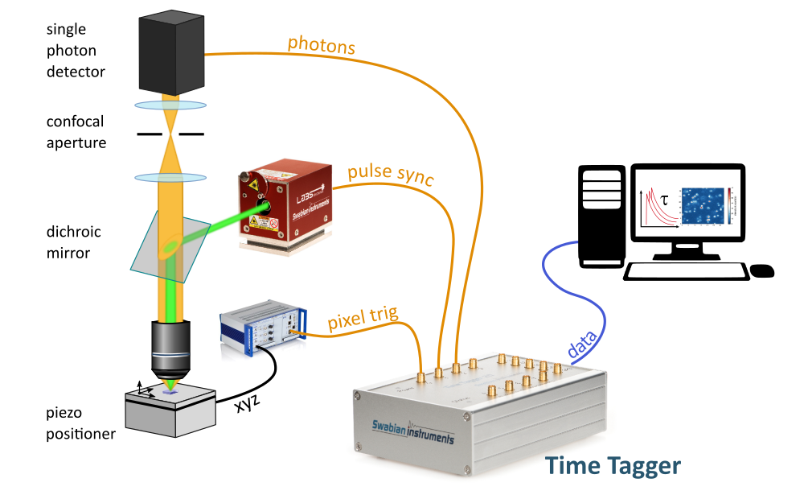
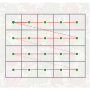

Confocal Fluorescence Microscope
This tutorial guides you through setting up a data acquisition for a typical confocal microscope controlled with Swabian Instruments’ Time Tagger. In this tutorial, we will use Time Tagger’s programming interface to define the data acquisition part of a scanning microscope. We will make no specific assumption of how the position scanning system is implemented except that it has to provide suitable signals detailed in the text.
The basic principle of confocal microscopy is that the light, collected from a sample, is spatially filtered by a confocal aperture, and only photons from a single spot of a sample can reach the detector. Compared to conventional microscopy, confocal microscopy offers several advantages, such as increased image contrast and better depth resolution, because the pinhole eliminates all out-of-focus photons, including stray light.
The following drawing shows a typical confocal fluorescence microscope setup.
{kind=link}
In this setup, the objective focuses the excitation light from the laser at the fluorescent sample and, at the same time, collects the resulting emission. The emission photons pass through the confocal aperture and arrive at the single-photon detector (SPD). For every detected photon, the SPD produces a voltage pulse at its output, namely a photon pulse.
Image from a raster scan
In the confocal microscopy, the detection area is a small diffraction-limited spot. Therefore, to record an image, one has to scan the sample surface point-by-point and record the detector signal at every location. The majority of scanning microscopes employ a raster scan path that visits every point on sample step-by-step and line-by-line. The figure below visualizes the travel path in a typical raster scan.
{kind=link}
In the figure above, the scan starts from the bottom-left corner and proceeds horizontally in steps. At each scan position, the scanner has to wait for arbitrary integration time to allow sufficient photon collection. This process stops when the scanner reaches the top-right point.
Along the scan path, the positioner generates a pulse for every new sample position. In the following text, we will call this signal a pixel pulse.
To measure a confocal fluorescence image, the arrival times of the following three signals must be recorded: photon pulses, laser pulses, and pixel pulses.
Time Tagger configuration
The Time Tagger library includes several measurement classes designed for confocal microscopy.
We will start by defining channel numbers and store them in variables for convenience.
PIXEL_START_CH = 1 # Rising edge on input 1
PIXEL_END_CH = -1 # Falling edge on input 1
LASER_CH = 2
SPD_CH = 3
Now let’s connect to the Time Tagger.
tt = createTimeTagger()
The Time Tagger hardware allows you to specify a trigger level voltage for each input channel. This trigger level, always applies for both, rising and falling edges of an input pulse. Whenever the signal level crosses this trigger level, the Time Tagger detects this as an event and stores the timestamp. It is convenient to set the trigger level to half a signal amplitude. For example, if your laser sync output provides pulses of 0.2 Volt amplitude, we set the trigger level to 0.1 V on this channel. The default trigger level is 0.5 Volt.
tt.setTriggerLevel(PIXEL_START_CH, 0.5)
tt.setTriggerLevel(LASER_CH, 0.1)
The Time Tagger allows for delay compensation at each channel. Such delays are inevitably present in every measurement setup due to different cable lengths or inherent delays in the detectors and laser sync signals. It is worth noting that a typical coaxial cable has a signal propagation delay of about 5 ns/m.
Let’s suppose that we have to delay the laser pulse by 6.3 ns, if we want to align it close to the arrival time of the fluorescence photon pulse. Using the Time Tagger’s API, this will look like:
tt.setInputDelay(LASER_CH, 6300) # Delay is always specified in picoseconds
tt.setInputDelay(SPD_CH, 0) # Default value is: 0
Now we are finished with setting up the Time Tagger hardware and are ready to proceed with defining the measurements.
Intensity scanning microscope
In this section, we start from an easy example of only counting the number of photons per pixel and spend some time on understanding how to use the pixel trigger signal. The Time Tagger library contains the generic CountBetweenMarkers measurement that has all the necessary functionality to implement the data acquisition for a scanning microscope.
For the CountBetweenMarkers measurement, you have to specify on which channels the photon and the pixel pulses arrive. Also, we have to specify the total number of points in the scan, which is the number of pixels in the final image. Furthermore, we assume that the pixel pulse edges indicate when to start, and when to stop counting photons and the pulse duration defines the integration time. If your scanning system generates pixel pulses of a different format, take a look at the section Alternative pixel trigger formats.
As a first step, we create a measurement object with all the necessary parameters provided.
nx_pix = 300
ny_pix = 200
n_pixels = nx_pix * ny_pix
cbm = CountBetweenMarkers(tt, SPD_CH, PIXEL_START_CH, PIXEL_STOP_CH, n_pixels)
The measurement is now prepared and waiting for the signals to arrive. The next step is to send a command to the piezo-positioner to start scanning and producing the pixel pulses for each location.
scanner.scan(
x0=0, dx=1e-5, nx=nx_pix,
y0=0, dy=1e-5, ny=ny_pix,
)
Note
The code above introduces a scanner object which is not part of the Time Tagger library. It is an example of a hypothetical programming interface for a piezo-scanner. Here, we also assume that this call is non-blocking, and the script can continue immediately after starting the scan.
After we started the scanner, the Time Tagger receives the pixel pulses, counts the events at each pixel, and stores the count in its internal buffer. One can read the buffer content periodically without disturbing the acquisition, even before the measurement is completed. Therefore, you can see the intermediate results and visualize the scan progress.
The resulting data from the CountBetweenMarkers measurement is a vector. We have to reorganize the elements of this vector according to the scan path if we want to display it as an image. For the raster scan, this reorganization can be done by a simple reshaping of the vector into a 2D array.
The following code gives you an example of how you can visualize the scan process.
while scanner.isScanning():
counts = cbm.getData()
img = np.reshape(counts, nx_pix, ny_pix)
plt.imshow(img)
plt.pause(0.5)
Fluorescence Lifetime Microscope
In the section Intensity scanning microscope, we completely discarded the time of arrival for photon and laser pulses. The Time Tagger allows you to record a fluorescence decay histogram for every pixel of the confocal image by taking into account the time difference between the arrival of the photon and laser pulses. This task can be achieved using the TimeDifferences measurement from the Time Tagger library. In this subsection, we will use the TimeDifferences measurement.
The TimeDifferences measurement calculates the time differences between laser and photon pulses and accumulates them in a histogram for every pixel. The measurement class constructor requires imaging and timing parameters, as shown in the following code snippet.
nx_pix = 300 # Number of pixels along x-axis
ny_pix = 200 # Number of pixels along y-axis
binwidth = 50 # in picoseconds
n_bins = 2000 # number of bins in a histogram
n_pixels = nx_pix * ny_pix # number of histograms
flim = TimeDifferences(
tt,
click_channel=SPD_CH,
start_channel=LASER_CH,
next_channel=PIXEL_START_CH,
binwidth=binwidth,
n_bins=n_bins,
n_histograms=n_pixels
)
Now we start the scanner and wait until the scan is completed. During the scan, we can read the current data and display it in real time.
while scanner.isScanning():
counts = flim.getData()
img3D = np.reshape(counts, n_bins, nx_pix, ny_pix) # Fluorescence image cube
# User defined function that estimates fluorescence lifetime for every pixel
flimg = get_lifetime(img3D)
plt.imshow(flimg)
plt.pause(0.5)
Alternative pixel trigger formats
What if a piezo-scanner provides a different trigger signal compared to considered in the previous sections? In this section, we look into a few common types of trigger signals and how to adapt our data acquisition to make them work.
Pixel pulse width defines the integration time
The case when the pulse width defines the integration time has been considered in the previous subsections.
Pixel pulse indicates the pixel start
When a pixel pulse has a duration different from the desired integration time, we must define the integration time manually. One way would be to record all events until the next pixel pulse and rely on a strictly fixed pixel pulse period. Alternatively, we can create a well-defined time window after each pixel pulse, so the measurement system becomes insensitive to the variation of the pixel pulse period.
One can define the time window using the DelayedChannel which provides a delayed copy of the leading edge for the pixel pulse.
integr_time = int(1e10) # Integration time of 10 ms in picoseconds
delayed_vch = DelayedChannel(tt, PIXEL_START_CH, integr_time)
PIXEL_END_CH = delayed_vch.getChannel()
cbm = CountBetweenMarkers(tt, SPD_CH, PIXEL_CH, PIXEL_END_CH, n_pixels)
The approach with using DelayedChannel allows for a constant integration time per pixel even if the pixel pulses do not occur at a fixed period. For instance, in a raster scan, more time is required to move to the beginning of the next line (fly-back time) compared to the pixel time.
Warning
You have to make sure that pixel pulses do not appear before the end of the integration time for the previous pixel.
FLIM with non-periodic pixel trigger
In some cases, a scanner generates the pixel pulses with no strictly defined period.
However, most scanning measurements require constant integration time for every pixel. Compared to CountBetweenMarkers, the TimeDifferences measurement do not have a PIXEL_END marker and accumulate the histogram for every pixel until the next pixel pulse is received. If this behavior is undesired, or if your pixel pulses are not periodic, you will need to gate your detector to guarantee a constant integration time.
The Time Tagger library provides you with the necessary tools to enforce a fixed integration time when using the TimeDifferences measurement. Gating the detector events can be done with the GatedChannel. The example code is provided below.
integr_time = int(1e10) # Integration time of 10 ms in picoseconds
delayed_vch = DelayedChannel(tt, PIXEL_START_CH, integr_time)
PIXEL_END_CH = delayed_vch.getChannel()
gated_vch = GatedChannel(tt, SPD_CH, PIXEL_START_CH, PIXEL_END_CH)
GATED_SPD_CH = gated_vch.getChannel()
flim = TimeDifferences(tt,
click_channel=GATED_SPD_CH,
start_channel=LASER_CH,
next_channel=PIXEL_START_CH,
binwidth=binwidth,
n_bins=n_bins,
n_histograms=n_pixels
)
Line pulse but no pixel pulses
When a scanning system only has the line-start signal and does not provide the pixel pulses, we have to define time intervals for each pixel by other means.
The pixel markers can be easily generated with EventGenerator virtual channel which generates events at times relative to the trigger event.
Furthermore, the EventGenerator allows you to generate not only pixel markers that are equally spaced but also pixels that are
spaced non-uniformly or have time varying integration times. For instance, you will find the EventGenerator particularly powerful, if you work with
resonant galvo-scanners and need to correct integration time and pixel spacing according to the speed profile of your scanner.
The example below shows how to apply EventGenerator for generation of pixel markers.
nx_pix = 300 # Number of pixels along x-axis
ny_pix = 200 # Number of pixels/lines along y-axis
integr_time = int(3e9) # Integration time of 3 ms in picoseconds
line_duration = 1e12 # Duration of the line scan in picoseconds
binwidth = 50 # in picoseconds
n_bins = 2000 # number of bins in a histogram
n_pixels = nx_pix * ny_pix # number of histograms
LINE_START_CH = 3
# Pixels are equally spaced in time (constant speed)
pixel_start_times = numpy.linspace(0, line_duration, nx_pix, dtype='int64')
# Pixel integration time is constant
pixel_stop_times = pixel_start_times + integr_time
# Create EventGenerator channels
pixel_start_vch = EventGenerator(tt, LINE_START_CH, pixel_start_times.tolist())
pixel_stop_vch = EventGenerator(tt, LINE_START_CH, pixel_stop_times.tolist())
PIXEL_START_CH = pixel_start_vch.getChannel()
PIXEL_END_CH = pixel_stop_vch.getChannel()
# Use GatedChannel to gate the detector
gated_vch = GatedChannel(tt, SPD_CH, PIXEL_START_CH, PIXEL_END_CH)
GATED_SPD_CH = gated_vch.getChannel()
flim = TimeDifferences(
tt,
click_channel=GATED_SPD_CH,
start_channel=LASER_CH,
next_channel=PIXEL_START_CH,
binwidth=binwidth,
n_bins=n_bins,
n_histograms=n_pixels
)
Note
In the TimeTagger software v2.7.2 we have completely redesigned Flim
measurement. It support easy interface similar to TimeDifferences, as well as
high-performance frame streaming interface that allows for real-time video-rate FLIM imaging.